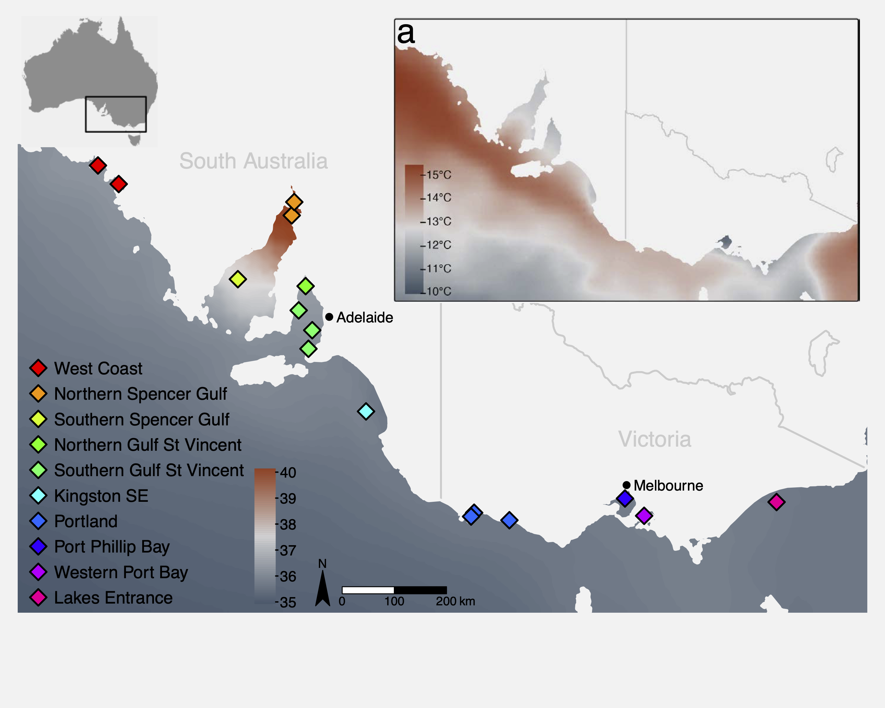
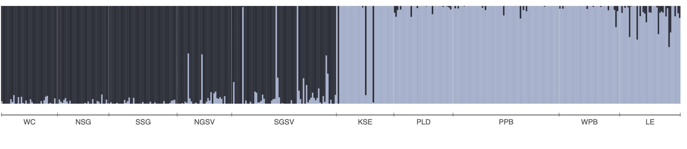

library(vegan) # RDA, permutation tests
library(ggplot2) # visualisation
library(dplyr) # data manipulation
library(tidyr) # data reshaping
library(usdm) # VIF filtering
library(robust) # robust covariance (rdadapt)
library(qvalue) # FDR-corrected q-values (rdadapt)
library(ggmanh) # Manhattan plots
library(RColorBrewer) # colour palettes
library(terra) # raster handling (environmental maps)
library(rnaturalearth) # coastline data (environmental maps)
library(rnaturalearthdata) # medium-resolution map data10 W10 Natural Selection & Adaptation
W10 Natural Selection & Adaptation


Learning outcomes
In this session we will learn how to detect signatures of local adaptation in genomic data using Genotype-Environment Association (GEA) analyses, with a focus on Redundancy Analysis (RDA). By the end of the session you should be able to:
- Understand the logic of GEA analysis and why it can help identify loci under natural selection
- Prepare and visualise environmental data for use in GEA
- Understand the importance of accounting for population structure as a confounding variable
- Run a partial RDA to identify genotype-environment associations
- Test model significance and quantify explained variance
- Identify candidate adaptive loci using the
rdadaptapproach - Visualise candidate loci in genomic and ordination space
Introduction
Adaptation in the ocean: why does it matter for conservation?
Understanding how populations adapt to their local environment is a central question in conservation biology. Populations that have evolved in response to specific environmental conditions such as high temperature or salinity may harbour unique genetic variation that allows them to persist under those conditions. As environments change, whether through climate change, pollution, or habitat modification, the capacity of populations to adapt becomes critical to their long-term survival.
Identifying loci under natural selection allows us to:
- Identify environmental gradients imposing selection
- Characterise the genetic basis of local adaptation
- Delineate adaptive units that may need consideration in management plans
- Predict which populations are most vulnerable to environmental change
- Prioritise populations for conservation interventions
Genotype-Environment Association (GEA) analysis
GEA approaches test for statistical associations between population allele frequencies (or individual genotypes) and environmental variables across sampling locations. The underlying logic is simple: if a locus is under selection by a particular environmental variable, we expect allele frequencies at that locus to co-vary with that variable across the landscape.
A key challenge is that genetic differentiation driven by neutral processes (drift, isolation by distance) also creates correlations between allele frequencies and geography. Because many environmental variables are themselves spatially structured, neutral genetic structure can generate spurious GEA signals. Accounting for this confounding is an essential part of GEA analyses and interpretation.
Why Redundancy Analysis (RDA) for GEA?
Redundancy Analysis (RDA) is a multivariate constrained ordination method that models the relationship between a matrix of response variables (e.g. SNP allele counts/frequencies) and a matrix of explanatory variables (environmental predictors). Conceptually, it’s multivariate multiple regression + ordination: it first fits allele-frequency variation as a function of environment, then summarizes the fitted (environment-explained) genetic variation into a small number of canonical axes that represent combinations of environmental variables.
Compared to univariate GEA methods, RDA offers several advantages:
- Tests all SNPs and all environmental variables simultaneously
- Detects SNPs responding to combinations of environmental variables (multilocus, multivariate signals)
- Can condition out confounding variation (e.g. population structure) via partial RDA
- Uses well-established permutation-based significance tests
- Produces interpretable ordination plots linking loci, individuals, and predictors
In a partial RDA, we include a representation of neutral structure as conditioning variables (using Condition() in the vegan formula interface). This effectively removes variance attributable to neutral population structure before testing for environment–genotype associations, helping reduce confounding when structure and environment are spatially correlated.
RDA compared to other common GEA approaches
Univariate association tests (e.g. GLM; LFMM; Bayenv2)
Strengths:
- Can have good power in some settings.
- Flexible per-locus inference.
- Familiar/intuitive outputs (p-values/q-values).
Weaknesses:
- Can exhibit relatively high false-positive rates under strong isolation-by-distance/hierarchical population structure.
- Evaluating each SNP against one environmental predictor at a time implicitly treats predictors as independent drivers of selection.
Constrained ordination-based multivariate methods (e.g. CCA, RDA/dbRDA)
Strengths:
- Constrained ordinations strike a good balance of high detection + low false-positive rates, even under strong IBD/structure.
- Because the axes are explicitly built from environmental predictors, they are ordered to represent the strongest environment-associated genetic gradients, making adaptive signals easier to isolate and interpret.
Weaknesses:
- If neutral structure is correlated with environment, constrained ordinations can still flag spurious associations unless you condition on structure (partial RDA) or otherwise account for it.
- RDA captures linear genotype–environment relationships; strongly nonlinear responses may be missed or require transformations/splines or alternative methods.
- Highly correlated predictors can make coefficients/loadings harder to interpret; results depend on appropriate standardisation and careful predictor selection.
Forester et al. (2018) found that constrained ordinations, and especially RDA, most consistently balanced power and false positives across a wide range of demographies, sampling designs, sample sizes, and selection strengths, outperforming other multivariate approaches like Random Forest in their simulations.
Further reading:
Forester, BR, Lasky, JR, Wagner, HH, & Urban, DL. (2018). Comparing methods for detecting multilocus adaptation with multivariate genotype‐environment associations. Molecular Ecology, 27(9), 2215–2233.
The study system: Australasian snapper in southern Australia
This tutorial uses a ddRAD-seq dataset of Australasian snapper (Chrysophrys auratus) sampled across the South Australian coastline, a region encompassing strong environmental gradients in temperature, salinity, primary productivity, and carbonate chemistry. The dataset includes:
- 448 individuals from 16 sampling sites
- 14,699 SNPs (we will use a subset of those here)
- Environmental data extracted from Bio-ORACLE marine climate layers
The sampling spans two oceanographic regions (west and east of Investigator Strait) with strong environmental heterogeneity, both among, and within regions. This provides an ideal system to examine the effects of environmental gradients on genetic variation. Further information about the study system and the data can be found in the attached paper:
Brauer, CJ, Bertram, A, Sandoval-Castillo, J, Fowler, A, Bell, J, Hamer, P, Wellenreuther, M, & Beheregaray, LB. (In press). Environmental gradients decouple demographic and adaptive connectivity in a highly mobile coastal marine species. Molecular Ecology.

Session overview
Step 1: Environmental data
- What environmental data should I use?
- Key environmental data sources
- Load and inspect environmental variables
- Understand variable redundancy, collinearity and VIF filtering
- Visualise environmental data
Step 2: Genomic data preparation
- Population allele frequencies
- Imputation of missing genotypes
- Estimating and controlling for population structure
Step 3: Partial RDA
- Running the constrained ordination
- How much variation is explained?
- Testing model and term significance
- Interpreting and plotting the ordination
Step 4: Identifying candidate loci
- The
rdadaptgenome scan approach - Q-value thresholding
- Manhattan plot of candidate loci
Step 5: Candidate loci RDA
- Individual-level RDA with candidate SNPs only
- Interpreting the adaptive landscape
Wrap-up
- Discussion
- Where have we come?
Setup
To run the tutorial you will need the following packages installed. If you do not have them, install with install.packages() or, for Bioconductor packages, BiocManager::install().
We also load the pre-processed tutorial dataset. This .rds file contains a list with all the data objects needed for the session. To keep computation times manageable, allele_freq and ind_snps contain a subset of ~2,000 SNPs rather than the full 14,699 used in the paper. See the box below for a description of each data component.
GEA_dat <- readRDS("data/GEA_dat.rds")
snapper.AF <- GEA_dat$allele_freq # population allele frequencies
env_raw <- GEA_dat$env_raw # raw environmental data
env_var_df <- GEA_dat$env_scaled # z-score scaled environmental data
omega.xy <- GEA_dat$omega # pop structure correction (BayPass MDS)
grouped_popmap <- GEA_dat$metadat # individual-level metadata
genome_info <- GEA_dat$genome_coords # SNP genomic coordinates
ind_snps <- GEA_dat$ind_snps # individual genotype matrix (all SNPs)Step 1: Environmental data
Key environmental data sources
The table below lists some common global and Australian-specific sources for terrestrial, marine, and freshwater environmental data. Most are freely available as raster layers that can be imported directly into R.
| Dataset | Domain | Key variables | Link |
|---|---|---|---|
| WorldClim v2 | Terrestrial | 19 bioclimatic variables (BIO1–BIO19): temperature and precipitation means, seasonality, extremes | worldclim.org |
| CHELSA v2 | Terrestrial | High-resolution (30 arc-sec) climate; bioclim variables + additional land-surface layers; also future projections | chelsa-climate.org |
| Bio-ORACLE v2 | Marine | Sea surface and benthic layers: temperature, salinity, oxygen, pH, currents, primary production, nutrients | bio-oracle.org |
| MARSPEC | Marine | Ocean climate: sea surface temperature, salinity, bathymetry, wave energy | marspec.org |
| TerraClimate | Terrestrial | Monthly climate and water balance (1958–present); good for interannual variation | climatologylab.org/terraclimate |
| HydroSHEDS | Freshwater | Global hydrographic data including catchment boundaries, river networks, and lakes. | hydrosheds.org |
| Geoscience Australia | Physical | Geology, topography, soils, 1-second DEM | ga.gov.au |
| National Environmental Stream Attributes | Freshwater | natural and anthropogenic characteristics of the stream and catchment environment | ecat.ga.gov.au |
| TERN (Terrestrial Ecosystem Research Network) | Terrestrial | Vegetation, soil moisture, flux tower data, land cover | tern.org.au |
| CSIRO Data Access Portal | Australian | Marine, atmospheric, and environmental datasets | data.csiro.au |
| NASA EarthData / MODIS | Global | Land surface temperature, NDVI, albedo, fire, ocean colour | earthdata.nasa.gov |
| Google Earth Engine | Global | Cloud-based access to thousands of datasets; scalable extraction | earthengine.google.com |
Inspecting the environmental predictors
The environmental data for this study comes from Bio-ORACLE (Assis et al. 2018), a publicly available suite of marine climate rasters. We extracted values at the centroid of each sampling group using the raster::extract() function. The five variables retained after VIF filtering were:
| Variable | Description |
|---|---|
BO22_tempmin_ss |
Minimum sea surface temperature (°C) |
BO22_calcite |
Surface calcite concentration (mol m⁻³) |
BO22_ph |
Sea surface pH |
BO22_salinitymean_ss |
Mean sea surface salinity (PSU) |
BO22_ppmin_ss |
Minimum primary production (g C m⁻² day⁻¹) |
Let us start by looking at the raw environmental data:
# inspect the environmental data
head(env_raw)
# summary of each variable
summary(env_raw[, 3:7])Mapping the environmental predictors
Before moving on to variable selection, it is useful to visualise where these environmental gradients occur across the study region. The code below loads two Bio-ORACLE rasters, crops them to southeastern Australia, masks out the land, and plots simple maps.
# Load the pre-processed Bio-ORACLE raster stack for the study region
env_rasters <- rast("data/env_rasters.tif")
# Get the Australian coastline and mask out land areas
aus_coast <- ne_countries(scale = "medium", country = "australia", returnclass = "sf")
aus_vect <- vect(aus_coast)
env_sea <- mask(env_rasters, aus_vect, inverse = TRUE)
names(env_sea) <- names(env_rasters) # mask() drops layer names; restore them
# Plot both maps side by side
par(mfrow = c(1, 2))
plot(env_sea$BO22_tempmin_ss,
main = "Min. sea surface temperature (°C)",
col = hcl.colors(100, "RdYlBu", rev = TRUE))
plot(aus_vect, add = TRUE, col = "grey85", border = "grey60")
plot(env_sea$BO22_salinitymean_ss,
main = "Mean sea surface salinity (PSU)",
col = hcl.colors(100, "YlGnBu"))
plot(aus_vect, add = TRUE, col = "grey85", border = "grey60")
par(mfrow = c(1, 1))Why VIF filtering?
Environmental variables are often highly correlated with each other. Including collinear predictors in an RDA (or any regression model) can lead to unstable estimates and reduced statistical power. We use Variance Inflation Factor (VIF) analysis to identify and remove redundant predictors.
The workflow is:
- Remove predictors with pairwise correlation above a threshold (
vifcor, threshold r = 0.7) - Iteratively remove predictors with VIF above a threshold (
vifstep, threshold VIF = 10)
The code below illustrates this filtering on the raw environmental data. We started with 27 Bio-ORACLE variables and retained 5 after correlation and VIF filtering.
# Step 1: Remove variables with pairwise r > 0.7
v1 <- vifcor(env_raw[, 3:ncol(env_raw)], th = 0.7)
env_filtered <- exclude(env_raw[, 3:ncol(env_raw)], v1)
# Step 2: Remove variables with VIF > 10
v2 <- vifstep(env_filtered, th = 10)
retained_env <- exclude(env_filtered, v2)
names(retained_env)Visualising environmental gradients: the z-score heatmap
After selecting the five retained variables, we z-score standardise them (mean = 0, SD = 1). This puts all variables on the same scale, making it easy to compare gradients visually. We then plot a heatmap of z-scores across all sampling sites.
# define the order of sites (south to north, west to east)
row_order <- rev(c("WC1","WC2","NSG1","NSG2","SSG","NGSV",
"SGSV1","SGSV2","SGSV3","KSE",
"PLD1","PLD2","PLD3","PPB","WPB","LE"))
col_order <- c("BO22_tempmin_ss","BO22_salinitymean_ss","BO22_ppmin_ss",
"BO22_ph","BO22_calcite")
# reshape and set factor levels
plot_df <- env_var_df %>%
pivot_longer(cols = all_of(col_order),
names_to = "variable",
values_to = "z") %>%
mutate(site = factor(site, levels = row_order),
variable = factor(variable, levels = col_order))
# heatmap
ggplot(plot_df, aes(variable, site, fill = z)) +
geom_tile() +
scale_fill_gradient2(low = "blue", mid = "white", high = "red",
midpoint = 0, name = "Z-score") +
labs(x = NULL, y = NULL) +
theme_minimal(base_size = 12) +
theme(axis.text.x = element_text(angle = 45, hjust = 1))Run the code and look at the resulting heatmap. You should see clear environmental gradients across the sampling sites.
Once you are happy with the heatmap, we can save it to file using ggsave().
row_order <- rev(c("WC1","WC2","NSG1","NSG2","SSG","NGSV",
"SGSV1","SGSV2","SGSV3","KSE",
"PLD1","PLD2","PLD3","PPB","WPB","LE"))
col_order <- c("BO22_tempmin_ss","BO22_salinitymean_ss","BO22_ppmin_ss",
"BO22_ph","BO22_calcite")
plot_df <- env_var_df %>%
pivot_longer(cols = all_of(col_order),
names_to = "variable",
values_to = "z") %>%
mutate(site = factor(site, levels = row_order),
variable = factor(variable, levels = col_order))
env_heatmap <- ggplot(plot_df, aes(variable, site, fill = z)) +
geom_tile() +
scale_fill_gradient2(low = "blue", mid = "white", high = "red",
midpoint = 0, name = "Z-score") +
labs(x = NULL, y = NULL) +
theme_minimal(base_size = 12) +
theme(axis.text.x = element_text(angle = 45, hjust = 1))
ggsave(plot = env_heatmap, filename = "env_zscore_heatmap.pdf",
width = 6, height = 6, units = "in")Step 2: Genomic data preparation
Population allele frequencies
We are going to run our RDA using population allele frequencies. Each row in the response matrix represents a population (sampling site), and each column represents a SNP.
The allele frequency matrix we will use, snapper.AF was generated from a genlight object. We used the melfuR::impute_genotypes function to impute missing genotypes based on population structure characterised using the LEA::snmf function (snmf is similar to Structure and Admixture). Allele frequencies were then calculated using the adegenet::makefreq() function. You can install the melfuR package from my GitHub, melfuR. Imputation with ADMIXTURE K=2 was used to fill missing genotypes before computing allele frequencies. This is important because RDA cannot handle missing data. Below is an ADMIXTURE plot for K=2 to give you a feel for the population structure in the data, and example code for genotype imputation and allele frequency estimation:

# Impute genotypes based on K=2 populations
imputed_gl <- melfuR::impute_genotypes(snapper_gl, K = 2)
# get population allele frequencies
snapper_gp <- genind2genpop(gl2gi(imputed_gl))
snapper.AF <- makefreq(snapper_gp, missing="0")
# get minor allele frequencies
snapper.AF <- snapper.AF[,seq(2,ncol(snapper.AF),2)]
colnames(snapper.AF) <- locNames(snapper_gp)
rownames(snapper.AF) <- levels(imputed_gl@pop)For this session we will use the snapper.AF object that contains our subset of 2000 loci.
# inspect the allele frequency matrix
dim(snapper.AF) # rows = populations, columns = SNPs
snapper.AF[1:5, 1:8] # first few rows and columns
range(snapper.AF) # should be between 0 and 1Accounting for population structure
A critical challenge in GEA analysis is that neutral genetic differentiation — driven by genetic drift, isolation by distance, and demographic history —
generates correlations between allele frequencies and geography. Because many environmental variables are spatially structured, this creates spurious GEA signals. The first decision is therefore whether you need to control for this at all.
The standard solution in partial RDA is to include some representation of neutral population structure as a conditioning variable. This removes the shared variance between the genomic and environmental data that is attributable to neutral processes, leaving only the environment-specific signal.
In this analysis, we use the BayPass covariance matrix (Ω) as our measure of population structure. BayPass is a hierarchical Bayesian method that directly estimates the genome-wide covariance structure among populations, without requiring prior population assignments. We then reduce the Ω matrix to two dimensions using multidimensional scaling (MDS). For this tutorial the BayPass analysis has already been run and the result is stored in GEA_dat$omega - a 16 × 2 matrix with one row per sampling site, and we can use it directly in the RDA.
Step 3: Partial RDA
Running the constrained ordination
We are now ready to run the partial RDA. The model is:
snapper allele frequencies ~ environmental variables | population structure (Ω)
The Condition() term in the vegan formula removes the variance explained by omega.xy before fitting the environmental predictors. This is the “partial” component of the partial RDA.
# Partial RDA: allele frequencies ~ env | population structure
rda_mod <- vegan::rda(
snapper.AF ~ BO22_tempmin_ss + BO22_calcite + BO22_ph +
BO22_salinitymean_ss + BO22_ppmin_ss +
Condition(omega.xy),
data = env_var_df
)
# Summary of the model
rda_modThe output shows several variance components:
- Total inertia: total variance in the allele frequency matrix
- Conditioned (= “partial”): variance explained by
omega.xy(removed) - Constrained: variance explained by the environmental predictors after conditioning
- Unconstrained: residual variance
# Run the partial RDA
rda_mod <- vegan::rda(
snapper.AF ~ BO22_tempmin_ss + BO22_calcite + BO22_ph +
BO22_salinitymean_ss + BO22_ppmin_ss +
Condition(omega.xy),
data = env_var_df
)
rda_modHow much variation is explained?
A key question is: how much of the genetic variation can be attributed to the environment, after accounting for population structure? We use the adjusted R² as a measure of effect size:
# Adjusted R-squared: variance explained by environment after conditioning
RsquareAdj(rda_mod)$adj.r.squared
# proportion of that constrained variance that is explained by each RDA axis
eigenvals(rda_mod) / sum(eigenvals(rda_mod))*100
screeplot(rda_mod)Testing significance
We can test model significance and the marginal contribution of each predictor using permutation tests. The vegan::anova.cca() function permutes rows of the response matrix to generate a null distribution:
# Test overall model significance
mod_perm <- anova.cca(rda_mod, nperm = 999)
# Test marginal effect of each predictor (holding others constant)
margin_perm <- anova.cca(rda_mod, by = "margin", nperm = 999)
mod_perm
margin_permPlotting the RDA biplot
The RDA biplot shows:
- Points: sampling sites (rows of
snapper.AF), projected onto the constrained axes - Arrows: environmental predictors - the direction and length indicate the strength and direction of the gradient
- Sites near each other have similar allele frequency profiles; sites near an arrow tip have high values for that variable
# axis labels showing proportion of constrained variance
x.lab <- paste0("RDA1 (", round(rda_mod$CCA$eig[1]/sum(rda_mod$CCA$eig)*100, 2), "%)")
y.lab <- paste0("RDA2 (", round(rda_mod$CCA$eig[2]/sum(rda_mod$CCA$eig)*100, 2), "%)")
# short labels for env variables
env_labels <- c("Temp.min", "Calcite", "pH", "Salinity", "PrimProd.min")
# biplot
plot(rda_mod, choices = c(1, 2), type = "n", xlab = x.lab, ylab = y.lab)
with(locs, points(rda_mod, display = "sites", col = loc_colors[location],
pch = 16, cex = 1.4))
text(rda_mod, "bp", choices = c(1, 2), labels = env_labels, col = "blue", cex = 0.7)
legend("bottomright", legend = names(loc_colors), col = loc_colors,
pch = 16, pt.cex = 1, cex = 0.75, box.lty = 0)Once you are satisfied with the plot, save it:
x.lab <- paste0("RDA1 (", round(rda_mod$CCA$eig[1]/sum(rda_mod$CCA$eig)*100, 2), "%)")
y.lab <- paste0("RDA2 (", round(rda_mod$CCA$eig[2]/sum(rda_mod$CCA$eig)*100, 2), "%)")
env_labels <- c("Temp.min", "Calcite", "pH", "Salinity", "Prod.min")
pdf(file = "rda_mod.pdf", height = 6, width = 6)
plot(rda_mod, choices = c(1, 2), type = "n", xlab = x.lab, ylab = y.lab)
with(locs, points(rda_mod, display = "sites", col = loc_colors[location],
pch = 16, cex = 1.4))
text(rda_mod, "bp", choices = c(1, 2), labels = env_labels, col = "blue", cex = 0.7)
legend("bottomright", legend = names(loc_colors), col = loc_colors,
pch = 16, pt.cex = 1, cex = 0.75, box.lty = 0)
dev.off()Arrow lengths in a biplot are not fixed properties of the variables. Rather, they reflect each variable’s contribution to the specific axes being displayed. A short arrow in the RDA1 vs RDA2 plot simply means that variable explains little of the constrained variance captured by those two axes; it may still have a strong signal on RDA3. Compare the arrow positions and lengths in the RDA1 vs RDA3 biplot:
x.lab <- paste0("RDA1 (", round(rda_mod$CCA$eig[1]/sum(rda_mod$CCA$eig)*100, 2), "%)")
z.lab <- paste0("RDA3 (", round(rda_mod$CCA$eig[3]/sum(rda_mod$CCA$eig)*100, 2), "%)")
env_labels <- c("Temp.min", "Calcite", "pH", "Salinity", "PrimProd.min")
plot(rda_mod, choices = c(1, 3), type = "n", xlab = x.lab, ylab = z.lab)
with(locs, points(rda_mod, display = "sites", col = loc_colors[location],
pch = 16, cex = 1.4))
text(rda_mod, "bp", choices = c(1, 3), labels = env_labels, col = "blue", cex = 0.7)
legend("bottomright", legend = names(loc_colors), col = loc_colors,
pch = 16, pt.cex = 1, cex = 0.75, box.lty = 0)To see all three axes simultaneously, we can use an interactive 3D biplot. This makes it easier to visualise how the environmental variables and sites relate to each other along different axes:
library(plotly)
# Extract site and biplot scores for axes 1–3
site_sc <- as.data.frame(scores(rda_mod, display = "sites", choices = 1:3))
bp_sc <- as.data.frame(scores(rda_mod, display = "bp", choices = 1:3))
env_labels <- c("Temp.min", "Calcite", "pH", "Salinity", "PrimProd.min")
# Scale arrows to extend clearly beyond the site cloud
sc <- max(abs(site_sc)) / max(abs(bp_sc)) * 1.1
bp_sc <- bp_sc * sc
# Axis labels (% constrained variance)
ax_pct <- round(rda_mod$CCA$eig[1:3] / sum(rda_mod$CCA$eig) * 100, 2)
# Build all arrow shafts as one trace using NA separators between segments
arrow_x <- arrow_y <- arrow_z <- c()
for (i in seq_len(nrow(bp_sc))) {
arrow_x <- c(arrow_x, 0, bp_sc[i, 1], NA)
arrow_y <- c(arrow_y, 0, bp_sc[i, 2], NA)
arrow_z <- c(arrow_z, 0, bp_sc[i, 3], NA)
}
# Compute bounding box over sites + arrow tips
all_x <- c(site_sc$RDA1, bp_sc$RDA1)
all_y <- c(site_sc$RDA2, bp_sc$RDA2)
all_z <- c(site_sc$RDA3, bp_sc$RDA3)
# Pad slightly so points don't sit on the edges
pad <- 0.05
x0 <- min(all_x) - diff(range(all_x)) * pad; x1 <- max(all_x) + diff(range(all_x)) * pad
y0 <- min(all_y) - diff(range(all_y)) * pad; y1 <- max(all_y) + diff(range(all_y)) * pad
z0 <- min(all_z) - diff(range(all_z)) * pad; z1 <- max(all_z) + diff(range(all_z)) * pad
# 12 edges of the cube as NA-separated segments
bx <- c(x0,x1,NA, x1,x1,NA, x1,x0,NA, x0,x0,NA, # bottom face
x0,x1,NA, x1,x1,NA, x1,x0,NA, x0,x0,NA, # top face
x0,x0,NA, x1,x1,NA, x1,x1,NA, x0,x0,NA) # vertical edges
by <- c(y0,y0,NA, y0,y1,NA, y1,y1,NA, y1,y0,NA, # bottom face
y0,y0,NA, y0,y1,NA, y1,y1,NA, y1,y0,NA, # top face
y0,y0,NA, y0,y0,NA, y1,y1,NA, y1,y1,NA) # vertical edges
bz <- c(z0,z0,NA, z0,z0,NA, z0,z0,NA, z0,z0,NA, # bottom face
z1,z1,NA, z1,z1,NA, z1,z1,NA, z1,z1,NA, # top face
z0,z1,NA, z0,z1,NA, z0,z1,NA, z0,z1,NA) # vertical edges
# Site points
fig <- plot_ly(
x = site_sc$RDA1, y = site_sc$RDA2, z = site_sc$RDA3,
type = "scatter3d", mode = "markers",
marker = list(color = loc_colors[locs$location], size = 5),
text = rownames(site_sc), hoverinfo = "text",
name = "Sites"
)
fig <- fig |> add_trace(
x = bx, y = by, z = bz,
type = "scatter3d", mode = "lines",
line = list(color = "grey60", width = 1),
hoverinfo = "none",
showlegend = FALSE,
inherit = FALSE
)
# Arrow shafts (single trace)
fig <- fig |> add_trace(
x = arrow_x, y = arrow_y, z = arrow_z,
type = "scatter3d", mode = "lines",
line = list(color = "steelblue", width = 4),
hoverinfo = "none",
showlegend = FALSE,
inherit = FALSE
)
# Arrow tips with labels
fig <- fig |> add_trace(
x = bp_sc$RDA1, y = bp_sc$RDA2, z = bp_sc$RDA3,
type = "scatter3d", mode = "markers+text",
marker = list(color = "steelblue", size = 5, symbol = "diamond"),
text = env_labels, textposition = "top center",
hoverinfo = "text",
showlegend = FALSE,
inherit = FALSE
)
fig |> layout(
scene = list(
xaxis = list(title = paste0("RDA1 (", ax_pct[1], "%)"),
showgrid = FALSE, zeroline = FALSE, showbackground = FALSE),
yaxis = list(title = paste0("RDA2 (", ax_pct[2], "%)"),
showgrid = FALSE, zeroline = FALSE, showbackground = FALSE),
zaxis = list(title = paste0("RDA3 (", ax_pct[3], "%)"),
showgrid = FALSE, zeroline = FALSE, showbackground = FALSE)
)
)Step 4: Identifying candidate loci
Having established that allele frequencies co-vary with the environment, we now want to identify which specific SNPs drive this association. Under neutrality, most SNPs should show only weak, noisy associations with the constrained RDA axes. In contrast, SNPs linked to local adaptation are expected to show unusually strong alignment with one or more environmental gradients. We therefore look for outlier SNPs in the RDA multivariate loading space.
Here, we are using the rdadapt function (Capblancq et al. 2018; also see Capblancq & Forester 2021), which implements an outlier detection approach based on the Mahalanobis distance of SNP loadings across the RDA axes. Mahalanobis distance measures “how extreme” a SNP is while accounting for correlations between axes (so a SNP that is moderately high on several correlated axes can still be a clear multivariate outlier).
The function:
- Extracts SNP loadings on the first
KRDA axes (you need to decide how many RDA axes to retain in your analyses) - Standardises them to z-scores
- Calculates the Mahalanobis distance of each SNP in the K-dimensional loading space
- Converts distances to p-values under a chi-squared distribution
- Applies genomic inflation correction (λ) and converts to q-values using the
qvaluepackage
# rdadapt function
rdadapt <- function(rda, K) {
loadings <- rda$CCA$v[, 1:K]
resscale <- apply(loadings, 2, scale)
resmaha <- covRob(resscale, distance = TRUE, na.action = na.omit,
estim = "pairwiseGK")$dist
lambda <- median(resmaha) / qchisq(0.5, df = K)
reschi2test <- pchisq(resmaha / lambda, K, lower.tail = FALSE)
qval <- qvalue(reschi2test)
return(data.frame(p.values = reschi2test, q.values = qval$qvalues))
}Running rdadapt
In this case, we will compute p- and q-values for all SNPs, retaining just the first two constrained axes:
rdadapt <- function(rda, K) {
loadings <- rda$CCA$v[, 1:K]
resscale <- apply(loadings, 2, scale)
resmaha <- covRob(resscale, distance = TRUE, na.action = na.omit,
estim = "pairwiseGK")$dist
lambda <- median(resmaha) / qchisq(0.5, df = K)
reschi2test <- pchisq(resmaha / lambda, K, lower.tail = FALSE)
qval <- qvalue(reschi2test)
return(data.frame(p.values = reschi2test, q.values = qval$qvalues))
}
k <- 2
rda.pq <- rdadapt(rda_mod, K = k)
# how many candidates at q < 0.01?
sum(rda.pq$q.values < 0.01)
# histogram of p-values
hist(rda.pq$p.values, breaks = 50,
main = "Distribution of rdadapt p-values",
xlab = "p-value", col = "steelblue", border = "white")Choosing a q-value threshold
The q-value is a false discovery rate (FDR)-corrected measure of significance. Using q < 0.01 means we accept that approximately 1% of our candidate list will be false positives on average.
rdadapt <- function(rda, K) {
loadings <- rda$CCA$v[, 1:K]
resscale <- apply(loadings, 2, scale)
resmaha <- covRob(resscale, distance = TRUE, na.action = na.omit,
estim = "pairwiseGK")$dist
lambda <- median(resmaha) / qchisq(0.5, df = K)
reschi2test <- pchisq(resmaha / lambda, K, lower.tail = FALSE)
qval <- qvalue(reschi2test)
return(data.frame(p.values = reschi2test, q.values = qval$qvalues))
}
k <- 2
rda.pq <- rdadapt(rda_mod, K = k)
# compare different thresholds
cat("q < 0.05:", sum(rda.pq$q.values < 0.05), "candidates\n")
cat("q < 0.01:", sum(rda.pq$q.values < 0.01), "candidates\n")
cat("q < 0.001:", sum(rda.pq$q.values < 0.001), "candidates\n")Manhattan plot
A Manhattan plot displays the q-values (on a –log10 scale) for all SNPs arranged by genomic position. This allows us to see whether candidate loci are randomly distributed across the genome or clustered in particular regions, which might suggest selective sweeps or chromosomal inversions.
# Manhattan plot using rdadapt q-values from the RDA
RDA.manhat.dat <- data.frame(
chromosome = factor(genome_info$chrom, levels = unique(genome_info$chrom)),
position = as.numeric(genome_info$pos),
qvalue = genome_info$qvalue
)
# colour palette for alternating chromosomes
cols <- c("#A1B1CC", "#0E7EC0")
g <- manhattan_plot(x = RDA.manhat.dat, pval.colname = "qvalue",
chr.gap.scaling = 2,
rescale = FALSE, signif = 0.01,
chr.col = cols,
chr.colname = "chromosome", pos.colname = "position",
plot.title = "", y.label = expression(-log[10](q)))
g# Save Manhattan plot
RDA.manhat.dat <- data.frame(
chromosome = factor(genome_info$chrom, levels = unique(genome_info$chrom)),
position = as.numeric(genome_info$pos),
qvalue = genome_info$qvalue
)
cols <- c("#A1B1CC", "#0E7EC0")
g <- manhattan_plot(x = RDA.manhat.dat, pval.colname = "qvalue",
rescale = FALSE, signif = 0.01,
chr.gap.scaling = 2,
chr.col = cols,
chr.colname = "chromosome", pos.colname = "position",
plot.title = "", y.label = expression(-log[10](q)))
ggsave("RDA_manhatten.pdf", plot = g, width = 10, height = 6)Step 5: Candidate loci RDA
From populations to individuals
The partial RDA in Step 3 used population allele frequencies as the response matrix. This is computationally efficient and statistically clean, but it discards some individual-level information. To better characterise and visualise the adaptive landscape, we can run a follow-up RDA using the individual genotype matrix (counts of the reference allele: 0, 1, or 2) restricted to the candidate loci identified in Step 4.
Extracting candidate loci and running the individual RDA
# Identify candidate SNPs at q < 0.01 using rdadapt q-values.
candidates <- genome_info$genericNames[
genome_info$qvalue < 0.01 & genome_info$genericNames %in% colnames(snapper.AF)
]
cat(length(candidates), "candidate SNPs at q < 0.01 (in tutorial subset)\n")
# subset individual genotype matrix to candidate loci
snps_cand <- ind_snps[, candidates]
# environmental data at individual level (extracted from Bio-ORACLE at each
# individual's coordinates)
env_ind <- GEA_dat$env_ind # individual-level env data frame
# individual-level RDA with candidate loci
cand_RDA <- vegan::rda(
snps_cand ~ BO22_tempmin_ss + BO22_calcite + BO22_ph +
BO22_salinitymean_ss + BO22_ppmin_ss,
data = env_ind
)
cand_RDA
RsquareAdj(cand_RDA)$r.squared# Candidates from the full analysis that are present in our tutorial subset
candidates <- genome_info$genericNames[
genome_info$qvalue < 0.01 & genome_info$genericNames %in% colnames(snapper.AF)
]
cat(length(candidates), "candidate SNPs at q < 0.01\n")
# individual-level RDA with candidate loci only
snps_cand <- ind_snps[, candidates]
env_ind <- GEA_dat$env_ind
cand_RDA <- vegan::rda(
snps_cand ~ BO22_tempmin_ss + BO22_calcite + BO22_ph +
BO22_salinitymean_ss + BO22_ppmin_ss,
data = env_ind
)
cand_RDA
RsquareAdj(cand_RDA)$r.squaredPlotting the candidate loci RDA
x.lab <- paste0("RDA1 (", round(cand_RDA$CCA$eig[1]/sum(cand_RDA$CCA$eig)*100, 2), "%)")
y.lab <- paste0("RDA2 (", round(cand_RDA$CCA$eig[2]/sum(cand_RDA$CCA$eig)*100, 2), "%)")
env_labels <- c("Temp.min", "Calcite", "pH", "Salinity", "Prod.min")
plot(cand_RDA, choices = c(1, 2), type = "n", xlab = x.lab, ylab = y.lab)
with(ind.locs, points(cand_RDA, display = "sites",
col = loc_colors[location], pch = 16, cex = 0.8))
text(cand_RDA, "bp", choices = c(1, 2),
labels = env_labels, col = "blue", cex = 0.7)
legend("topleft", legend = names(loc_colors), col = loc_colors,
pch = 16, pt.cex = 1, cex = 0.7, box.lty = 0)Save the plot:
x.lab <- paste0("RDA1 (", round(cand_RDA$CCA$eig[1]/sum(cand_RDA$CCA$eig)*100, 2), "%)")
y.lab <- paste0("RDA2 (", round(cand_RDA$CCA$eig[2]/sum(cand_RDA$CCA$eig)*100, 2), "%)")
env_labels <- c("Temp.min", "Calcite", "pH", "Salinity", "Prod.min")
pdf(file = "candRDA.pdf", height = 6, width = 6)
plot(cand_RDA, choices = c(1, 2), type = "n", xlab = x.lab, ylab = y.lab)
with(ind.locs, points(cand_RDA, display = "sites",
col = loc_colors[location], pch = 16, cex = 0.8))
text(cand_RDA, "bp", choices = c(1, 2),
labels = env_labels, col = "blue", cex = 0.7)
legend("topleft", legend = names(loc_colors), col = loc_colors,
pch = 16, pt.cex = 1, cex = 0.7, box.lty = 0)
dev.off()References and additional reading
Brauer et al. (2026) Environmental gradients decouple demographic and adaptive connectivity in a highly mobile coastal marine species. Molecular Ecology
Capblancq & Forester (2021) Redundancy analysis: A Swiss army knife for landscape genomics. Methods in Ecology & Evolution, 12, 2298–2309.
Forester et al. (2018) Comparing methods for detecting multilocus adaptation with multivariate genotype-environment associations. Molecular Ecology, 27, 2215–2233.
Lotterhos & Whitlock (2015) The relative power of genome scans to detect local adaptation depends on sampling design and statistical method. Molecular Ecology, 24, 1031–1046.
Assis et al. (2018) Bio-ORACLE v2.0: extending marine data layers for bioclimatic modelling. Global Ecology and Biogeography, 27, 277–284.
Exercises
Use the code you have learned today with either the tutorial dataset or your own data to work through the following:
Exercise A: Try including only two environmental predictors in the partial RDA. How does the biplot change? Does model significance change?
Exercise B: Remove the conditioning variable (
Condition(omega.xy)) from the RDA formula. How does the R² change? How does the number of candidate loci change? What does this tell you about the role of population structure as a confound?Exercise C: Run the
rdadaptfunction withK = 3(first three axes). How does the set of candidate loci change compared toK = 2?
Wrap up
Discussion Time
What are the main assumptions of the partial RDA approach? What could cause those assumptions to be violated?
The candidate loci we identified are associated with environmental gradients. Does this prove they are under selection? What additional evidence would strengthen this inference?
How might the candidate loci identified here be informative for management?
Where have we come?
In this session we have:
- Prepared environmental data for GEA analysis, including VIF filtering to remove collinear predictors and z-score standardisation
- Generated population allele frequencies and understood the need for imputed, complete genomic data
- Estimated neutral population structure using BayPass and reduced it to MDS coordinates for use as a conditioning variable
- Run a partial RDA to quantify and test environment-genotype associations across the snapper genome, accounting for neutral population structure
- Applied the rdadapt genome scan to identify candidate loci, control the false discovery rate, and visualise the genomic distribution of candidates in a Manhattan plot
- Validated and explored the adaptive signal with a candidate-loci RDA at the individual level, confirming that the identified loci capture the environment-associated component of genetic variation